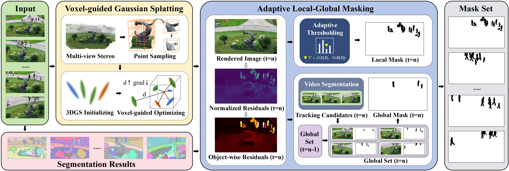

Given a few posed drone imagery of a wild scene, our goal is to identify and eliminate dynamic distractors.
We first predict a dense point cloud through a learning-based multi-view stereo method, followed by point
sampling based on confidence and geometric features. The sampled point cloud is used to initialize Gaussian
primitives, which is then optimized using a voxel-guided strategy. At iteration \(t=n\), we calculate the
normalized residual of the rendered image and combine it with the segmentation results to obtain the
object-wise residuals. We adaptively adjust the threshold based on the object-wise residuals and statistical
approaches to obtain local masks. Meanwhile, we mark objects with high residuals as tracking candidates,
deriving the global set at \(t=n\) by combining the global set at \(t=n-1\) with the tracking outcomes at \(t=n\).
After merging the local mask and the global mask retrieved from the global set, we can obtain the final mask
at time \(t=n\). The mask set illustrates the dynamic distractors we predicted.